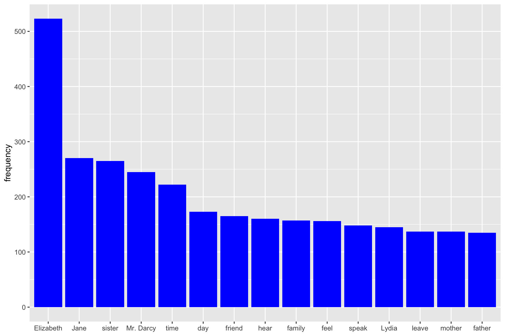

How to create thesaurus with R using the wordnet package
But first, let’s download the Jane Austen novel, Pride and Prejudice from the gutenbergr package.
pp <- gutenberg_download(1342) %>% .$text %>% paste0(., collapse = " ")Data Engineering for Text annotation
Text annotation is a key step of the data engineering process. We used the R package udpipe for doing annotations. This package is available on CRAN. According to R-bloggers, there aren’t many available tools which do all the text annotations:
for multiple languages and
do not depend on external software dependencies (java/python)
which also allow you to train your own parsing & tagging models.
…Except R package udpipe which satisfies these 3 criteria.
Udpipe enables tokenisation, speech tagging, lemmatization and dependency parsing. Dependency Parsing is the process of finding relationships between words- e.g “head” words and words which modify those heads. This allows you to look for words which may be far away from each other in the raw text but influence each other. Dependency parsing will not be used to build our LDA model as opposed to tokenisation, speech tagging and lemmatization.
So, what are these concepts?
Tokenization is the first step in cleaning data: it removes punctuation, spacing, handling of special characters and extract words from sentences. udpipe is also handy in the sense that it keeps track for you of document ids, paragraph and sentence id, token id, and so on, supposing that you have correct spacing/punctuation between, paragraph, sentences, etc.
Lemmatization is an advanced form of stemming. The way it works is that it groups together the inflected forms of a word (walks, walked, walking) into its lemma (walk) so they can be analysed as a single item. An advantage of using udpipe is that it does for you the mapping between token and lemma.
According to wikipedia, part-of-speech tagging, also called POS tagging is the process of marking up a corpus as corresponding to a particular part of the speech based on both its definition and its context—i.e., its relationship with adjacent and related words in a phrase, sentence, or paragraph. A simplified form of this is commonly taught to school-age children, in the identification of words as nouns, verbs, adjectives, adverbs, etc. To train our LDA model, we used only Nouns, Verbs, Adjectives, Adverbs and Prop Nouns.
Below is the code for text annotation in R with udpipe. This part of the code can be quite computationally expensive if you have a massive corpus of several hundred thousands documents. Hence the need to hook R up to AWS that we will see in the next chapter.
More information about the quality of the udpipe model for text annotation for your language can be found here. As seen in the document, the models produce correct lemma and upos in more than 96% of the sentences. This is good enough for our purpose. I have tested both the Norwegian and English models.
# Downloading and loading the udpipe English model for lemmatization
model <- udpipe_download_model(language = "english")
model <- udpipe_load_model(model$file_model)
# Lemmatization and text annotation
annotated <- udpipe_annotate(model, x = pp)
annotated <- as.data.frame(annotated)Finally, we need to concatinate 2 consecutive PROPN so that the lemma “Jane” and “Austen” that follow each other in the same sentence, in the same paragraph, become the new lemma “Jane Austen”. Here is the code to do that.
annotated_concat <- annotated %>%
mutate(token_id = as.numeric(token_id),
temp = ifelse(upos == "PROPN", NA, token_id)) %>%
tidyr::fill(temp) %>%
mutate(sk_id = ifelse(upos == "PROPN", temp + 1, token_id)) %>%
group_by(doc_id, paragraph_id, sentence_id, sentence, sk_id) %>%
summarise(lemma = paste0(lemma, collapse = " "),
upos = first(upos),
.groups = "drop") %>%
ungroup()The Document Term Matrix
First, a little word on the document-term matrix - what is it? It is the input data to train the LDA model. The rows in the document-term matrix correspond to all documents in the corpus and the columns are the lemmas from the corpus vocabulary. The values w(i,j) of the matrix indicate how often the word j appears in document i. It is usual to reduce the document-term matrix to the lemmas that appear in a minimum of X documents. Griffiths and Steyvers (2004) recommend to set this X value to 5. Another way to reduce the document-term matrix is to include only the lemma with the highest term-frequency inverse document frequency scores as recommended by Blei & Lafferty 2009 (tf-idf)
During the final stages of the data preprosessing to create the document term matrix, we do the following:
remove stop words
only select the upos Noun, Verb, Adjective, Adverb and Prop Nouns
remove words that appear only once in the entire Austen corpus
visialise the most frequent words
remove the word “Chapter”
create the document term matrix
This is done in R as shown below. And let’s have a look at the word that are the most frequent in the Jane Austen’s novels we have chosen to look at.
stop <- tidytext::stop_words
dt <- annotated_concat %>%
filter(upos %in% c("NOUN", "VERB", "ADV", "ADJ", "PROPN"),
lemma %nin% stop$word)
lemma_freq <- dt %>%
group_by(lemma, upos) %>%
summarise(frequency = n(),
.groups = "drop") %>%
arrange(desc(frequency)) %>%
filter(frequency > 1, lemma != "Chapter")
lemma_freq %>%
head(., 15) %>%
ggplot(aes(x = reorder(lemma, -frequency), y = frequency)) +
geom_bar(stat = "identity", fill = "blue") +
theme(axis.title.x = element_blank())
Extracting the thesaurus
Thanks to the wordnet package, thesaurus can be extracted as fellows:
synonyms("sister", "NOUN")## [1] "babe" "baby" "sis" "sister" "Sister"synonyms("time", "NOUN")## [1] "clip" "clock time" "fourth dimension" "meter"
## [5] "metre" "prison term" "sentence" "time"Resources
We used the cran documentation on the wordnet package to create this tutorial. The documentation is available here.